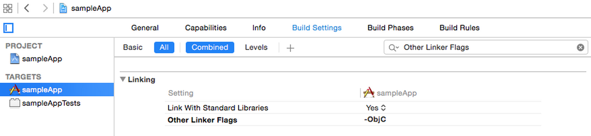

libicucore.dylibCFNetwork.frameworkSecurity.frameworkFoundation.frameworkCoreData.frameworkSystemConfiguration.framework

-ObjC”

Try Building your Project. If Building Succeeds, let’s move on to Initializing the SDK. If Building Fails, please check your steps and make sure you’ve completed all the steps.